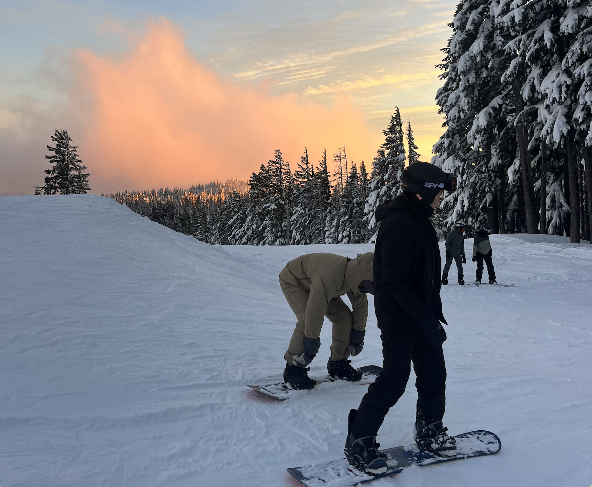
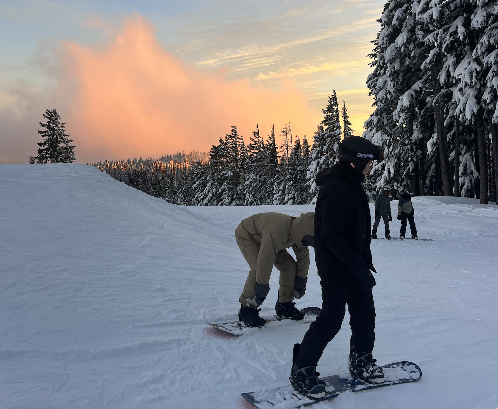
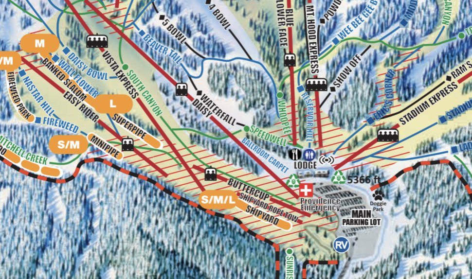
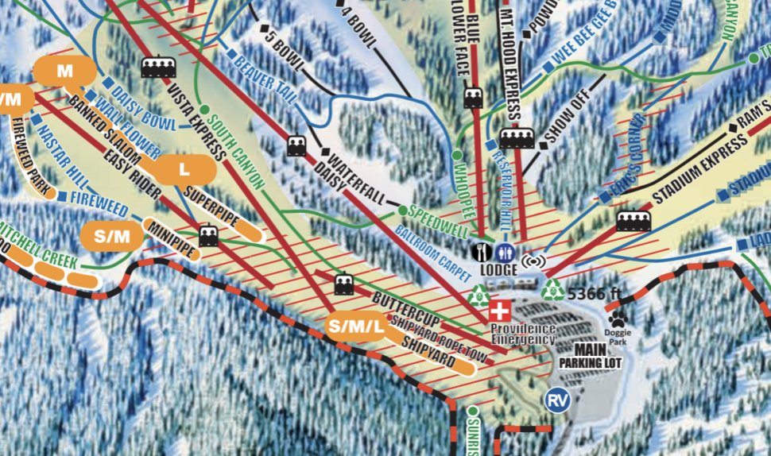
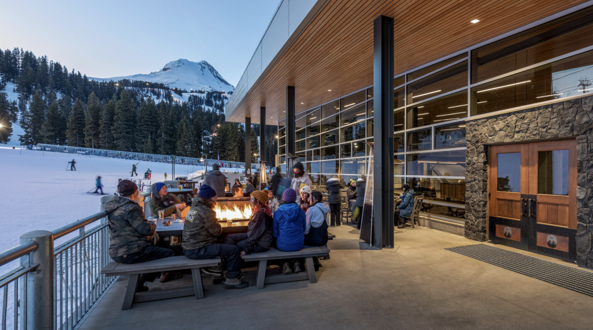

Mt. Hood Meadows: The Premier Ski Destination on Mt. Hood
For skiers and snowboarders looking for diverse terrain, modern amenities, and stunning views, Mt. Hood Meadows is the top choice on Oregon’s tallest peak. As the largest and most developed ski resort on Mt. Hood, Meadows offers everything from gentle beginner slopes to challenging double black diamond runs, making it a well-rounded destination for all skill levels.
A Resort for Everyone
Meadows has a welcoming atmosphere that attracts families, weekend regulars, and expert riders. The resort balances a modern, well-maintained infrastructure with a laid-back Pacific Northwest vibe, making it a top pick for those seeking a full-service ski experience without the crowds of larger destination resorts.
 

Terrain & Snow Conditions
Variety for All Levels: With over 2,150 acres of terrain, Meadows has something for everyone. Beginner-friendly groomers are plentiful near the base, while intermediates and advanced skiers will love the long cruisers, glades, and steeper bowls.
Advanced & Expert Terrain: The Heather Canyon and Private Reserve areas offer some of the best expert terrain in Oregon, with steep chutes, cliff drops, and deep powder on storm days.
Reliable Snowfall: Meadows gets an average of 430 inches of snow per year, ensuring great conditions throughout the season.
Lifts, Crowds & Amenities
Lift System: The resort has a modern, high-speed lift system, reducing wait times compared to other Mt. Hood resorts.
Crowds: Weekends and holidays can get busy, but the mountain’s size helps spread out visitors.
Dining & Après-Ski: On-mountain food options include the cozy Schuss Bar, the upscale Alpenstube, and quick grab-and-go spots.
Lodging: No slopeside lodging, but Government Camp and Hood River provide plenty of accommodation options.
Lift Ticket Prices & Value
More expensive than Timberline and Skibowl, but offers a higher-end experience with better terrain and amenities.
Season passes and multi-day tickets provide good value for frequent visitors.
Overall
Mt. Hood Meadows is the best all-around ski resort on Mt. Hood, perfect for those wanting diverse terrain, reliable snow, and a full-service experience. Whether you're a beginner or an expert chasing powder in Heather Canyon, Meadows is a must-visit.